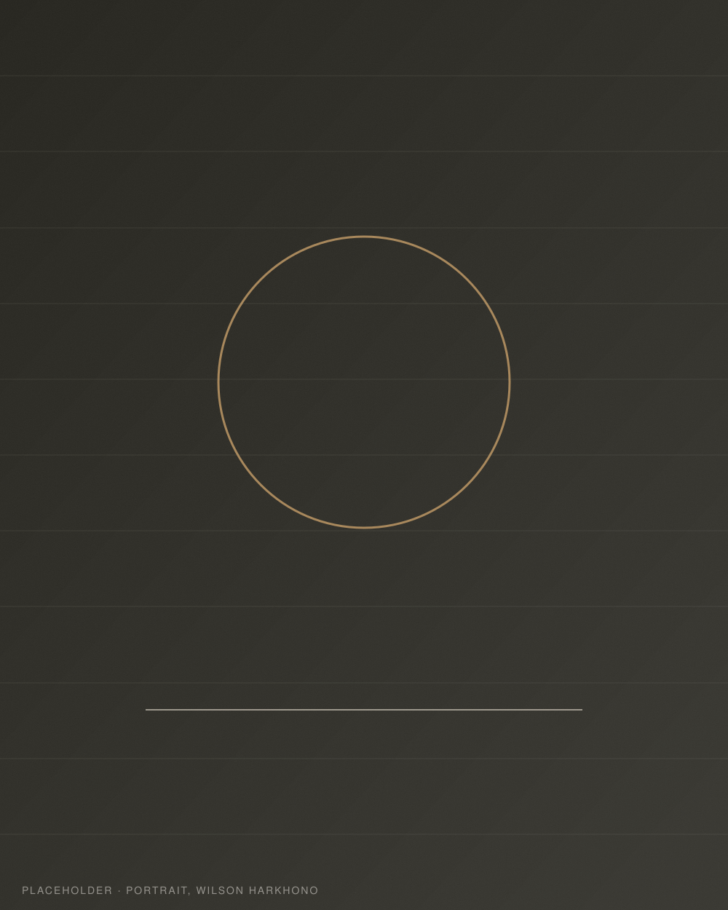

Wilson Harkhono
Founder & Principal Architect
Returned to Indonesia in 2019 to found WHA Studio after practicing with Kengo Kuma & Associates in Tokyo, Adrian Smith + Gordon Gill in Chicago, and KTGY in Oakland.
- M.Arch with Distinction — Harvard Graduate School of Design
- B.A. Architecture, High Honors — UC Berkeley, minor in sustainable design
- Finalist — Lexus Design Award 2018
- RAMSA Travel Fellow 2018